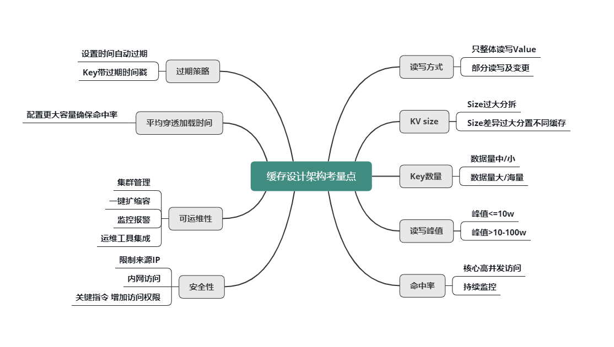

- 00 开篇寄语：缓存，你真的用对了吗？.md.html
- 01 业务数据访问性能太低怎么办？.md.html
- 02 如何根据业务来选择缓存模式和组件？.md.html
- 03 设计缓存架构时需要考量哪些因素？.md.html
- 04 缓存失效、穿透和雪崩问题怎么处理？.md.html
- 05 缓存数据不一致和并发竞争怎么处理？.md.html
- 06 Hot Key和Big Key引发的问题怎么应对？.md.html
- 07 MC为何是应用最广泛的缓存组件？.md.html
- 08 MC系统架构是如何布局的？.md.html
- 09 MC是如何使用多线程和状态机来处理请求命令的？.md.html
- 10 MC是怎么定位key的.md.html
- 11 MC如何淘汰冷key和失效key.md.html
- 12 为何MC能长期维持高性能读写？.md.html
- 13 如何完整学习MC协议及优化client访问？.md.html
- 14 大数据时代，MC如何应对新的常见问题？.md.html
- 15 如何深入理解、应用及扩展 Twemproxy？.md.html
- 16 常用的缓存组件Redis是如何运行的？.md.html
- 17 如何理解、选择并使用Redis的核心数据类型？.md.html
- 18 Redis协议的请求和响应有哪些“套路”可循？.md.html
- 19 Redis系统架构中各个处理模块是干什么的？.md.html
- 20 Redis如何处理文件事件和时间事件？.md.html
- 21 Redis读取请求数据后，如何进行协议解析和处理.md.html
- 22 怎么认识和应用Redis内部数据结构？.md.html
- 23 Redis是如何淘汰key的？.md.html
- 24 Redis崩溃后，如何进行数据恢复的？.md.html
- 25 Redis是如何处理容易超时的系统调用的？.md.html
- 26 如何大幅成倍提升Redis处理性能？.md.html
- 27 Redis是如何进行主从复制的？.md.html
- 28 如何构建一个高性能、易扩展的Redis集群？.md.html
- 29 从容应对亿级QPS访问，Redis还缺少什么？.md.html
- 30 面对海量数据，为什么无法设计出完美的分布式缓存体系？.md.html
- 31 如何设计足够可靠的分布式缓存体系，以满足大中型移动互联网系统的需要？.md.html
- 32 一个典型的分布式缓存系统是什么样的？.md.html
- 33 如何为秒杀系统设计缓存体系？.md.html
- 34 如何为海量计数场景设计缓存体系？.md.html
- 35 如何为社交feed场景设计缓存体系？.md.html
03 设计缓存架构时需要考量哪些因素？
你好，我是你的缓存老师陈波，欢迎进入第 3 课时“缓存的引入及架构设计”。
至此，缓存原理相关的主要知识点就讲完了，接下来会讲到如何引入缓存并进行设计架构，以及在缓存设计架构中的一些关键考量点。
缓存的引入及架构设计
缓存组件选择
在设计架构缓存时，你首先要选定缓存组件，比如要用 Local-Cache，还是 Redis、Memcached、Pika 等开源缓存组件，如果业务缓存需求比较特殊，你还要考虑是直接定制开发一个新的缓存组件，还是对开源缓存进行二次开发，来满足业务需要。
缓存数据结构设计
确定好缓存组件后，你还要根据业务访问的特点，进行缓存数据结构的设计。对于直接简单 KV 读写的业务，你可以将这些业务数据封装为 String、Json、Protocol Buffer 等格式，序列化成字节序列，然后直接写入缓存中。读取时，先从缓存组件获取到数据的字节序列，再进行反序列化操作即可。对于只需要存取部分字段或需要在缓存端进行计算的业务，你可以把数据设计为 Hash、Set、List、Geo 等结构，存储到支持复杂集合数据类型的缓存中，如 Redis、Pika 等。
缓存分布设计
确定了缓存组件，设计好了缓存数据结构，接下来就要设计缓存的分布。可以从 3 个维度来进行缓存分布设计。
- 首先，要选择分布式算法，是采用取模还是一致性 Hash 进行分布。取模分布的方案简单，每个 key 只会存在确定的缓存节点，一致性 Hash 分布的方案相对复杂，一个 key 对应的缓存节点不确定。但一致性 Hash 分布，可以在部分缓存节点异常时，将失效节点的数据访问均衡分散到其他正常存活的节点，从而更好地保证了缓存系统的稳定性。
- 其次，分布读写访问如何进行实施，是由缓存 Client 直接进行 Hash 分布定位读写，还是通过 Proxy 代理来进行读写路由？Client 直接读写，读写性能最佳，但需要 Client 感知分布策略。在缓存部署发生在线变化时，也需要及时通知所有缓存 Client，避免读写异常，另外，Client 实现也较复杂。而通过 Proxy 路由，Client 只需直接访问 Proxy，分布逻辑及部署变更都由 Proxy 来处理，对业务应用开发最友好，但业务访问多一跳，访问性能会有一定的损失。
- 最后，缓存系统运行过程中，如果待缓存的数据量增长过快，会导致大量缓存数据被剔除，缓存命中率会下降，数据访问性能会随之降低，这样就需要将数据从缓存节点进行动态拆分，把部分数据水平迁移到其他缓存节点。这个迁移过程需要考虑，是由 Proxy 进行迁移还是缓存 Server 自身进行迁移，甚至根本就不支持迁移。对于 Memcached，一般不支持迁移，对 Redis，社区版本是依靠缓存 Server 进行迁移，而对 Codis 则是通过 Admin、Proxy 配合后端缓存组件进行迁移。
缓存架构部署及运维管理
设计完毕缓存的分布策略后，接下来就要考虑缓存的架构部署及运维管理了。架构部署主要考虑如何对缓存进行分池、分层、分 IDC，以及是否需要进行异构处理。
- 核心的、高并发访问的不同数据，需要分别分拆到独立的缓存池中，进行分别访问，避免相互影响；访问量较小、非核心的业务数据，则可以混存。
- 对海量数据、访问超过 10～100万 级的业务数据，要考虑分层访问，并且要分摊访问量，避免缓存过载。
- 如果业务系统需要多 IDC 部署甚至异地多活，则需要对缓存体系也进行多 IDC 部署，要考虑如何跨 IDC 对缓存数据进行更新，可以采用直接跨 IDC 读写，也可以采用 DataBus 配合队列机进行不同 IDC 的消息同步，然后由消息处理机进行缓存更新，还可以由各个 IDC 的 DB Trigger 进行缓存更新。
- 某些极端场景下，还需要把多种缓存组件进行组合使用，通过缓存异构达到最佳读写性能。
- 站在系统层面，要想更好得管理缓存，还要考虑缓存的服务化，考虑缓存体系如何更好得进行集群管理、监控运维等。
缓存设计架构的常见考量点
在缓存设计架构的过程中，有一些非常重要的考量点，如下图所示，只有分析清楚了这些考量点，才能设计架构出更佳的缓存体系。

读写方式
首先是 value 的读写方式。是全部整体读写，还是只部分读写及变更？是否需要内部计算？比如，用户粉丝数，很多普通用户的粉丝有几千到几万，而大 V 的粉丝更是高达几千万甚至过亿，因此，获取粉丝列表肯定不能采用整体读写的方式，只能部分获取。另外在判断某用户是否关注了另外一个用户时，也不需要拉取该用户的全部关注列表，直接在关注列表上进行检查判断，然后返回 True/False 或 0/1 的方式更为高效。
KV size
然后是不同业务数据缓存 KV 的 size。如果单个业务的 KV size 过大，需要分拆成多个 KV 来缓存。但是，不同缓存数据的 KV size 如果差异过大，也不能缓存在一起，避免缓存效率的低下和相互影响。
key 的数量
key 的数量也是一个重要考虑因素。如果 key 数量不大，可以在缓存中存下全量数据，把缓存当 DB 存储来用，如果缓存读取 miss，则表明数据不存在，根本不需要再去 DB 查询。如果数据量巨大，则在缓存中尽可能只保留频繁访问的热数据，对于冷数据直接访问 DB。
读写峰值
另外，对缓存数据的读写峰值，如果小于 10万 级别，简单分拆到独立 Cache 池即可。而一旦数据的读写峰值超过 10万 甚至到达 100万 级的QPS，则需要对 Cache 进行分层处理，可以同时使用 Local-Cache 配合远程 cache，甚至远程缓存内部继续分层叠加分池进行处理。微博业务中，大多数核心业务的 Memcached 访问都采用的这种处理方式。
命中率
缓存的命中率对整个服务体系的性能影响甚大。对于核心高并发访问的业务，需要预留足够的容量，确保核心业务缓存维持较高的命中率。比如微博中的 Feed Vector Cache，常年的命中率高达 99.5% 以上。为了持续保持缓存的命中率，缓存体系需要持续监控，及时进行故障处理或故障转移。同时在部分缓存节点异常、命中率下降时，故障转移方案，需要考虑是采用一致性 Hash 分布的访问漂移策略，还是采用数据多层备份策略。
过期策略
- 可以设置较短的过期时间，让冷 key 自动过期；
- 也可以让 key 带上时间戳，同时设置较长的过期时间，比如很多业务系统内部有这样一些 key：key_20190801。
平均缓存穿透加载时间
平均缓存穿透加载时间在某些业务场景下也很重要，对于一些缓存穿透后，加载时间特别长或者需要复杂计算的数据，而且访问量还比较大的业务数据，要配置更多容量，维持更高的命中率，从而减少穿透到 DB 的概率，来确保整个系统的访问性能。
缓存可运维性
对于缓存的可运维性考虑，则需要考虑缓存体系的集群管理，如何进行一键扩缩容，如何进行缓存组件的升级和变更，如何快速发现并定位问题，如何持续监控报警，最好有一个完善的运维平台，将各种运维工具进行集成。
缓存安全性
对于缓存的安全性考虑，一方面可以限制来源 IP，只允许内网访问，同时对于一些关键性指令，需要增加访问权限，避免被攻击或误操作时，导致重大后果。
好了，第3课时的内容到这里就全部结束了，我们一起来做一个简单的回顾。首先，我们学习了在系统研发中，如何引入缓存，如何按照4步走对缓存进行设计架构及管理。最后，还熟悉了缓存设计架构中的考量点，这样你在缓存设计架构时对号入座即可。